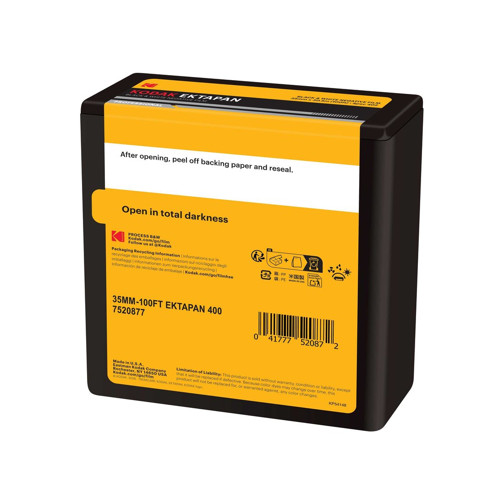

코닥이 라인업에 되돌린 목록에 눈이 가는 물건이 있다. 100피트 벌크롤이다. 필름값이 오르는 동안 조용히 잊혔던 물건이다.
무엇이 돌아왔나
직접 유통 라인에 들어온 것
- Ektapan 100 · 400 · 4×5 시트, 100피트 롤
- Ektacolor Pro 160 · 400 · 4×5, 8×10 시트
- Tri-X 320 · 4×5, 5×7, 8×10 시트
- Tri-X 400 · 100피트 롤
2025년 9월 Kodacolor 부터 시작된 정리가 마무리되는 모양새다. 알라리스가 맡던 스틸 필름 유통이 이스트만 코닥으로 넘어왔고, 이번에 대형 포맷과 벌크롤까지 들어왔다.

100피트가 몇 통인가
여기서부터가 실용적인 이야기다. 100피트는 약 30.5미터, 1,200인치다.
36컷 한 통을 감는 데 리더까지 65인치 안팎이 든다. 나누면 36컷 기준 열여덟 통쯤 나온다. 24컷으로 짧게 감으면 스물다섯 통까지 간다.
필름 한 통 값을 100피트 가격에서 역산해 보면 시중 낱개 가격의 절반에서 3분의 2 사이로 떨어진다. 얼마나 떨어지는지는 그때그때 환율과 수입가에 달렸으니 직접 계산해 보시는 편이 정확하다.
필요한 것
벌크로딩 준비물
- 벌크 로더 · 100피트 롤을 넣고 원하는 길이만큼 감아 내는 장치
- 빈 카트리지 · 재사용식이 편하다. 다 쓴 필름 통을 열어 쓰기도 한다
- 암실이나 체인지백 · 로더에 처음 필름을 물릴 때만 필요하다. 그다음부터는 밝은 데서 감는다
- 테이프 · 필름을 스풀에 붙인다. 잘 떨어지지 않는 것으로 고른다
로더는 한 번 사면 오래 쓴다. 중고로도 흔하다. 처음 물릴 때 한 번만 어두운 데서 하면 그다음은 어렵지 않다.
맡기기 전에 확인할 것
직접 감은 필름을 현상소에 맡길 때 걸리는 대목이 몇 가지 있다.
DX 코드가 없다. 재사용 카트리지에는 감도를 읽는 은색 격자가 없거나 원래 필름의 코드가 남아 있다. 카메라가 감도를 잘못 읽을 수 있으니 수동으로 맞춰야 한다.
현상소에 무슨 필름인지 알려야 한다. 캔에 아무 표시가 없으니 맡길 때 종류와 감도를 함께 적어 주는 편이 안전하다. 매직으로 캔에 써 두면 서로 편하다.
컷 수가 들쭉날쭉하다. 감은 길이에 따라 37컷이 나오기도 하고 34컷에서 끊기기도 한다. 컷 수로 값을 매기는 곳이면 미리 물어보시기 바란다.
누구에게 맞나
한 해에 서너 통 찍는 사람에게는 권하지 않는다. 100피트를 다 쓰기 전에 필름이 늙는다. 냉장 보관을 해도 흑백 기준 몇 해다.
한 달에 두세 통 이상 찍고 같은 필름을 계속 쓰는 사람이라면 계산이 맞는다. 흑백을 집에서 현상하는 사람이라면 더 그렇다. Tri-X 400 이 100피트로 돌아온 것이 그래서 반갑다.
필름값을 줄이는 새로운 방법은 아니다. 필름을 많이 찍던 시절에는 당연한 선택이었고, 그 시절 물건이 다시 만들어지기 시작했다.